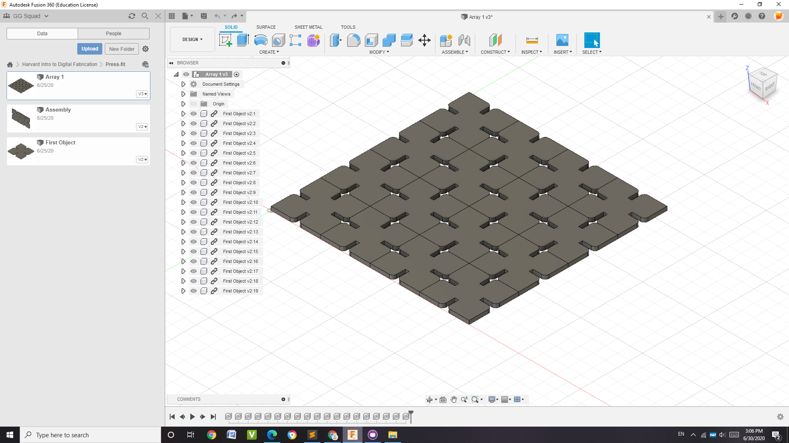
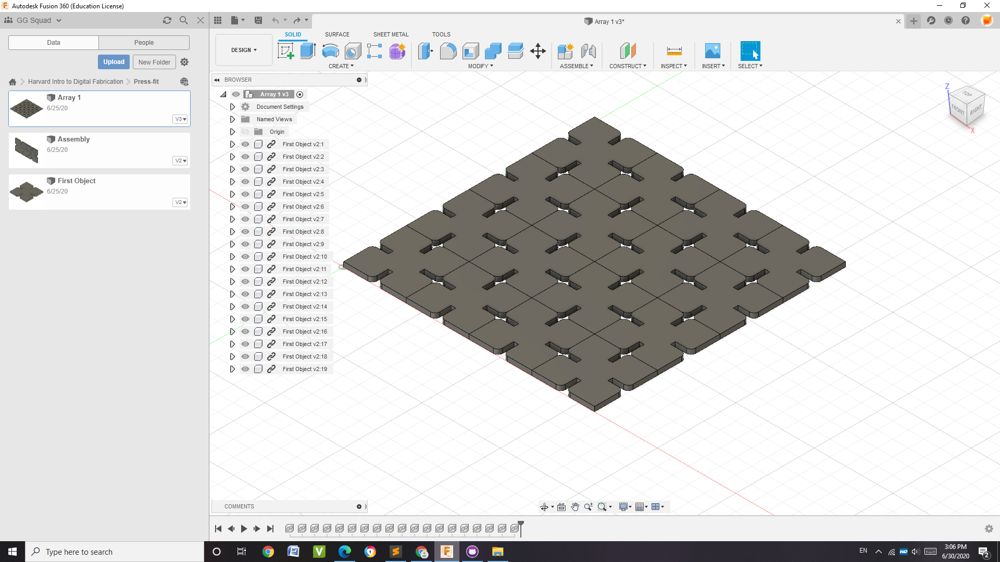

|PHYS S-12| Week 1: Introduction
Day 1: Introduction to Materials and Documentation
This was the first day of the summer course. I was really excited to see other people who loved designing, engineering, etc. I was also pleasantly surprised at the amount of people who were musicians and artists! At the same time, I was very nervous.
Day 2: Fusion 360
For our class, we started working with Autodesk Fusion 360, a program for 3D design. I had worked with programs like these before in my school. Personally, I am more familiar with Autodesk Inventor, but Fusion 360 has pretty similar mechanics. It is still fun and good to use.
Components
Looking through the kit, I chose three objects that I wanted to design on Fusion 360. I chose one of the 3D printed pieces (white), one of the Lego Cylinders, and a small metal bearing.
 
